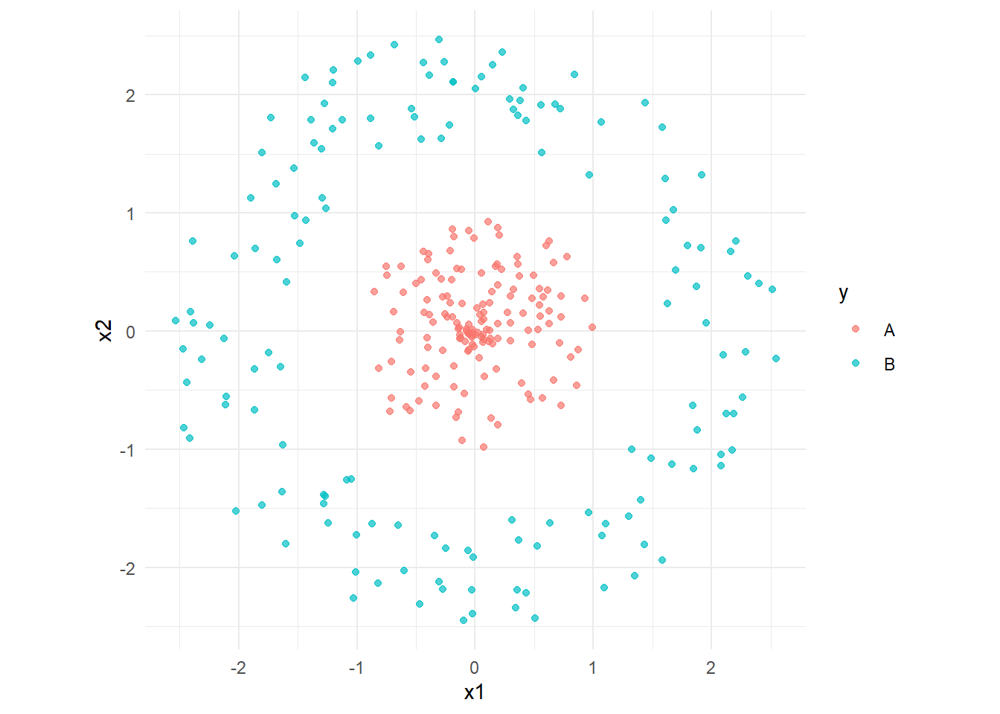
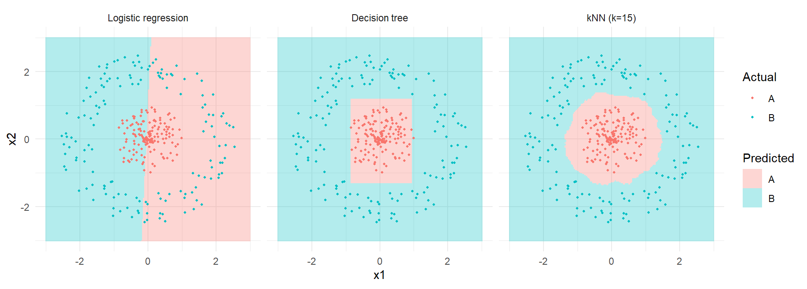

set.seed(2026)
# 생물정보학 관행: 행 = 유전자, 열 = 샘플
expr <- matrix(rnorm(6 * 4), nrow = 6,
dimnames = list(paste0("GENE", 1:6), paste0("P", 1:4)))
dim(expr) # 6 genes x 4 patients[1] 6 4Eunji Ha
September 21, 2026
우리가 늘 쓰던 통계 모델도 결국 데이터에서 규칙을 찾습니다. 그럼 machine learning은 무엇이 다를까요? 질문이 다릅니다.
| 전통적 통계 모델링 | Machine learning | |
|---|---|---|
| 묻는 것 | 이 변수가 결과와 관련이 있는가? | 새로운 샘플의 결과를 맞히는가? |
| 보는 숫자 | p-value, 신뢰구간, 효과크기 | generalization error, AUC |
| 성공의 기준 | 가진 데이터를 잘 설명 | 못 본 데이터를 잘 예측 |
| 실패의 형태 | 가정 위반, 검정력 부족 | overfitting |
“가지고 있는 데이터를 잘 맞히는 것은 아무 의미가 없다.”
이 문장이 앞으로 15주 동안 계속 돌아옵니다. W3의 검증 설계, W6의 정규화, W7의 pruning, W9의 ensemble이 전부 같은 문제를 다른 각도에서 푸는 것입니다.
학습은 경험(data) → model → 새로운 상황에 적용의 과정입니다. 기존 프로그래밍과 비교하면 입력과 출력이 뒤집혀 있습니다.
| 입력 | 출력 | |
|---|---|---|
| 기존 프로그래밍 | 규칙 + 데이터 | 답 |
| Machine learning | 데이터 + 답 | 규칙 |
즉 우리가 하려는 일은 데이터로부터 함수 \(f: X \rightarrow Y\) 를 찾는 것입니다.
진짜 규칙(ground truth)은 아무도 모릅니다. 우리가 가진 건 그 규칙이 만들어낸 유한한 샘플뿐입니다. 데이터가 100개면 100개가 허락하는 만큼만 규칙을 좁힐 수 있고, 나머지는 우리가 가정으로 메워야 합니다. 그 가정이 이 장의 마지막 주제인 inductive bias입니다.
앞으로 계속 쓸 용어입니다. 오믹스 데이터에 대응시켜 외우면 편합니다.
| 용어 | 의미 | RNA-seq 예시 |
|---|---|---|
| data set | 전체 경험/기록 | 환자 200명의 발현 행렬 |
| instance / sample | 기록 하나 | 환자 1명 (또는 세포 1개) |
| attribute / feature | 대상의 성질 | 유전자 하나 |
| feature value | feature가 가질 수 있는 값 | 해당 유전자의 정규화 발현량 |
| sample space | feature로 만들어진 공간 | 20,000차원 공간의 점 = 환자 1명 |
| label | 우리가 맞히려는 값 | 질환군 / 생존기간 |
| hypothesis | 데이터로부터 학습한 model | 학습된 분류기 |
| ground truth | 실제로 잠재된 규칙 | 알 수 없음 |
| training | data로 model을 만드는 과정 | — |
| testing | model로 새 샘플을 예측 | — |
생물정보학의 발현 행렬은 보통 행 = 유전자, 열 = 샘플입니다. 그런데 거의 모든 ML 라이브러리는 행 = 샘플, 열 = feature를 기대합니다.
전치를 빼먹으면 “유전자 20,000개를 분류하는 모델”이 만들어지고, 에러 없이 조용히 잘못된 결과가 나옵니다. 이 과목에서 가장 자주 나올 실수이니 매번 dim()으로 확인하세요.
import numpy as np
import pandas as pd
rng = np.random.default_rng(2026)
# 생물정보학 관행: 행 = 유전자, 열 = 샘플
expr = pd.DataFrame(rng.normal(size=(6, 4)),
index=[f"GENE{i}" for i in range(1, 7)],
columns=[f"P{i}" for i in range(1, 5)])
print(expr.shape) # (6 genes, 4 patients)
# ML이 기대하는 모양: 행 = 샘플, 열 = feature
X = expr.T
print(X.shape) # (4 samples, 6 features)label이 있는지, 그리고 어떤 형태인지에 따라 나뉩니다.
한 학기 동안 우리가 지나갈 경로입니다.
데이터 수집
↓ 전처리 / Feature engineering (W2)
↓ 검증 설계 + 성능 척도 결정 (W3-W4)
↓ 모델 학습 (W5-W13)
↓ 모델 비교 및 선택 (W4)
↓ 해석과 보고 (W14)Machine learning은 철저히 귀납입니다. 그래서 태생적으로 “틀릴 수 있음”을 안고 갑니다.
feature 3개가 각각 3가지 값을 가질 수 있는 아주 작은 문제를 생각해 봅시다. 각 feature에 대해 model은 “특정 값이어야 한다” 또는 “아무 값이어도 된다(*)”를 고를 수 있습니다.
feature 3개짜리 장난감 문제도 후보가 65개입니다. 유전자를 발현/비발현으로만 나눠도 후보의 자릿수가 9,500자리를 넘습니다.
여기서 결정적인 사실 하나가 나옵니다.
유한한 training data로는 version space가 절대 하나로 좁혀지지 않습니다.
살아남은 후보들은 training data에서는 똑같이 완벽하지만, 새로운 데이터에서는 서로 다른 답을 냅니다. 그럼 우리는 무엇을 근거로 하나를 고를까요?
Version space에 남은 후보 중 어느 것을 선택할지에 대한 알고리즘의 성향을 inductive bias(귀납적 편향)라고 합니다.
“bias”라는 단어 때문에 나쁜 것처럼 들리지만, 정반대입니다. 모든 학습 알고리즘은 inductive bias를 가지며, 가져야만 합니다. bias가 없으면 version space에서 하나를 고를 근거가 없어 아무것도 학습할 수 없습니다.
따라서 “이 알고리즘은 가정이 없어서 객관적이다”라는 말은 성립하지 않습니다. 가정이 명시적이지 않을 뿐입니다.
비슷하게 잘 맞는 가설이 여러 개라면, 가장 단순한 것을 고른다.
가장 널리 쓰이는 inductive bias입니다. 증명된 원리가 아니라 heuristic이라는 점이 중요합니다. W6의 정규화(Ridge/Lasso), W7의 pruning, W11의 prior가 모두 이 원칙을 수식으로 옮긴 것입니다.
가능한 모든 문제에 대해 평균을 내면, 모든 학습 알고리즘의 기대 성능은 같다.
즉 모든 상황에서 우월한 알고리즘은 없습니다. 알고리즘이 잘 맞는 이유는 그 알고리즘의 bias가 마침 그 문제의 구조와 맞았기 때문입니다.
같은 데이터에 세 가지 알고리즘을 적합시켜 봅니다. 셋 다 training data는 비슷하게 맞히지만, 비어 있는 공간을 채우는 방식이 완전히 다릅니다. 그것이 곧 bias입니다.
library(ggplot2)
library(dplyr)
library(tidyr)
library(rpart)
library(class)
set.seed(2026)
# 동심원 형태의 2-class 데이터
make_ring <- function(n, r_min, r_max, label) {
theta <- runif(n, 0, 2 * pi)
r <- runif(n, r_min, r_max)
data.frame(x1 = r * cos(theta), x2 = r * sin(theta), y = factor(label))
}
df <- rbind(make_ring(150, 0.0, 1.0, "A"),
make_ring(150, 1.6, 2.6, "B"))
ggplot(df, aes(x1, x2, colour = y)) +
geom_point(alpha = 0.7) +
coord_equal() +
theme_minimal()
# 공간 전체를 촘촘한 격자로 덮고, 각 지점에서 모델의 예측을 받아옵니다
grid <- expand.grid(x1 = seq(-3, 3, length.out = 200),
x2 = seq(-3, 3, length.out = 200))
# 1) 로지스틱 회귀 — 직선 경계만 그릴 수 있음
m_glm <- glm(y ~ x1 + x2, data = df, family = binomial)
grid$`Logistic regression` <- ifelse(
predict(m_glm, grid, type = "response") > 0.5, "B", "A")
# 2) Decision tree — 축에 평행한 사각형 경계
m_tree <- rpart(y ~ x1 + x2, data = df)
grid$`Decision tree` <- as.character(predict(m_tree, grid, type = "class"))
# 3) kNN — 데이터를 그대로 따라가는 유연한 경계
grid$`kNN (k=15)` <- as.character(
knn(train = df[, c("x1", "x2")],
test = grid[, c("x1", "x2")],
cl = df$y, k = 15))# 주의: 그래프 라벨은 영문으로 둡니다.
# GitHub Actions 러너에 한글 폰트가 없어 축·범례 한글이 깨질 수 있습니다.
grid_long <- grid |>
pivot_longer(-c(x1, x2), names_to = "model", values_to = "pred") |>
mutate(model = factor(model,
levels = c("Logistic regression", "Decision tree", "kNN (k=15)")))
ggplot(grid_long, aes(x1, x2)) +
geom_raster(aes(fill = pred), alpha = 0.3) +
geom_point(data = df, aes(colour = y), size = 0.7) +
facet_wrap(~ model) +
coord_equal() +
theme_minimal() +
labs(fill = "Predicted", colour = "Actual")
import numpy as np
import matplotlib.pyplot as plt
from sklearn.linear_model import LogisticRegression
from sklearn.tree import DecisionTreeClassifier
from sklearn.neighbors import KNeighborsClassifier
rng = np.random.default_rng(2026)
# 동심원 형태의 2-class 데이터
def make_ring(n, r_min, r_max, label):
theta = rng.uniform(0, 2 * np.pi, n)
r = rng.uniform(r_min, r_max, n)
return np.c_[r * np.cos(theta), r * np.sin(theta)], np.full(n, label)
X_a, y_a = make_ring(150, 0.0, 1.0, 0)
X_b, y_b = make_ring(150, 1.6, 2.6, 1)
X = np.vstack([X_a, X_b])
y = np.concatenate([y_a, y_b])
models = {
"Logistic regression": LogisticRegression(),
"Decision tree": DecisionTreeClassifier(),
"kNN (k=15)": KNeighborsClassifier(n_neighbors=15),
}
# 공간 전체를 촘촘한 격자로 덮고, 각 지점에서 모델의 예측을 받아옵니다
xx, yy = np.meshgrid(np.linspace(-3, 3, 300),
np.linspace(-3, 3, 300))
grid = np.c_[xx.ravel(), yy.ravel()]
fig, axes = plt.subplots(1, 3, figsize=(12, 4))
for ax, (name, model) in zip(axes, models.items()):
model.fit(X, y)
ax.contourf(xx, yy, model.predict(grid).reshape(xx.shape), alpha=0.3)
ax.scatter(X[:, 0], X[:, 1], c=y, s=6)
ax.set_title(f"{name} (train acc = {model.score(X, y):.2f})")
ax.set_aspect("equal")
plt.tight_layout()
plt.show()세 그림을 나란히 놓고 보세요.
make_ring의 반지름을 바꿔 두 class가 서로 겹치게 만들어 보세요. 세 모델 중 무엇이 가장 크게 흔들립니까?k를 1, 15, 100으로 바꿔 보세요. k = 1의 경계는 왜 그렇게 생겼을까요?x1, x2 대신 x1^2 + x2^2를 feature로 넣으면 로지스틱 회귀는 어떻게 될까요? → 이것이 W10 kernel method의 핵심 아이디어입니다.| 개념 | 한 줄 정의 | 이 과목에서의 위치 |
|---|---|---|
| Hypothesis space | 알고리즘이 고려 가능한 모든 model의 집합 | 알고리즘 선택 = 이 공간의 선택 |
| Version space | training data와 모순되지 않는 가설들 | 데이터만으로는 하나로 좁혀지지 않음 |
| Inductive bias | 무엇을 고를지에 대한 알고리즘의 성향 | 모든 알고리즘이 가진다. 없으면 학습 불가 |
| Occam’s razor | 비슷하면 단순한 쪽 | W6 정규화, W7 pruning, W11 prior의 뿌리 |
| No Free Lunch | 모든 문제에 우월한 알고리즘은 없다 | “내 데이터에서” 비교해야 하는 이유 (W3) |